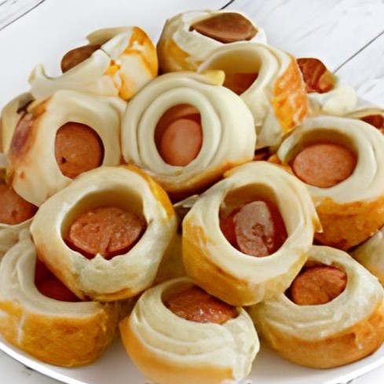
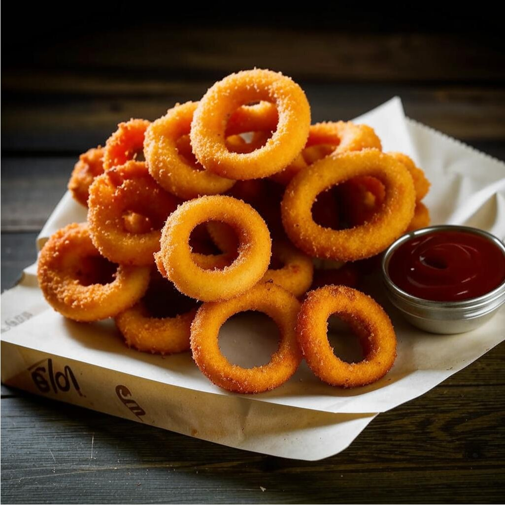
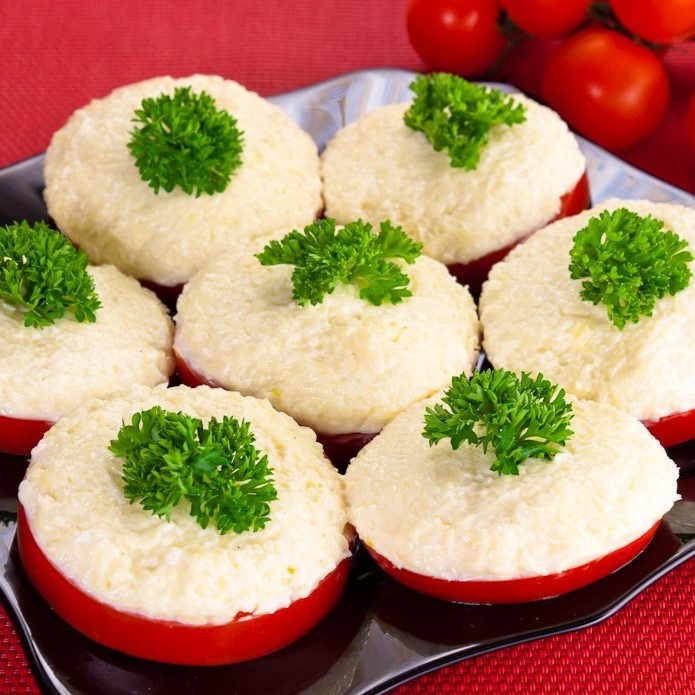
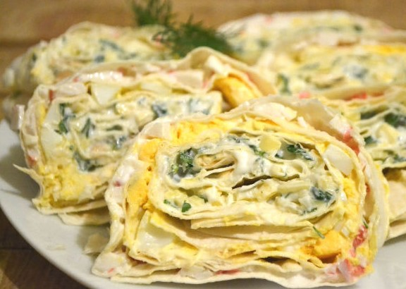

Во время просмотра фильма постоянно хочется перекусить. А если герои сериала едят, желание сделать так же возрастает. Не нужно терзаться муками голода или грызть покупные чипсы. К домашнему киносеансу стоит подготовиться заранее — на это потребуется полчаса, а то и меньше.
Приводим рецепты вкусных закусок под фильм или сериал, которые точно окажутся уместны:
Мини-сосиски в тесте
- Пачка готового слоёного теста
- 8-10 сосисок
- Кетчуп для подачи
Тесто разморозить и порезать на тонкие полоски. Завернуть каждую сосиску в тесто и порезать на кусочки.
Выпекать при температуре 200 градусов 10-15 минут.
Луковые кольца
- Лук
- 3 куриных яйца
- Мука
- Растительное масло
- Панировочные сухари
Нарезаем лук кольцами, из которых выбираем только самые большие и плотные.
Далее кладем муку, яйца и сухари в три тарелки, яйца взбалтываем.
Обваливаем каждое кольцо сначала в муке, потом в яйцах, и в панировочных сухарях, повторяем все то же самое еще раз, но без муки.
Выливаем масло на сковородку и обжариваем кольца в нем.
Обжаренные луковые кольца в кляре укладывать на салфетку, чтоб не было много масла.
Помидоры с шапочкой
- 3 помидора
- 100 г твёрдого сыра
- 1,5 столовые ложки майонеза
- 2 зубчика чеснока
- 2 щепотки соли
- Щепотка перца
- Зелень - по вкусу
Помидоры помойте и вырежьте из каждого овоща сердцевинку.
Твердый сыр натрите на мелкой терке в миску или глубокую емкость.
Добавьте туда же майонез, соль, щепотку молотого черного перца и спрессуйте очищенный зубчик чеснока. Аккуратно перемешайте ингредиенты между собой.
Помидоры нарежьте кружочками толщиной не менее 0,5 см. Выложите их на блюдо.
На каждый кружочек томата выложите 1 ч.л. сырной начинки и аккуратно распределите ее по поверхности.
Украсьте приготовленную закуску свежей зеленью, подайте на промытых листьях зеленого салата.
Рулет из лаваша
- 3 лаваша
- 3 яйца
- 300 г крабовых палочек
- 150 г твёрдого сыра
- 2 зубчика чеснока
- 2 веточки укропа
- 200 г майонеза
Готовим начинку. Зелень мелко рубим. К зелени добавляем измельченный с помощью чеснокодавилки чеснок. Если твёрдый сыр пластинами - нарезаем мелко, а если одним куском - натираем на терке. Добавляем его к измельченной зелени. Добавляем 2 столовые ложки майонеза. Перемешиваем.
С крабовых палочек снимаем обертку и нарезаем их мелко. К крабовым палочкам добавляем 4 столовые ложки майонеза. Перемешиваем.
Яйца варим 15 минут в подсоленной воде. Остывшие яйца нарезаем мелко, добавляем 3 столовые ложки майонеза. Перемешиваем.
На первый пласт лаваша наносим тонкую сеточку из майонеза и выкладываем всю начинку из зелени, чеснока, сыра. Распределяем равномерно начинку по всему лавашу.
Заворачиваем лаваш в рулет. На второй пласт лаваша наносим сеточку из майонеза и выкладываем начинку из яиц.
Берем рулет с начинкой из зелени и сыра и кладем на лаваш с яйцом. Заворачиваем все туго в один рулет.
На третий пласт лаваша наносим сеточку из майонеза и выкладываем начинку из крабовых палочек.
Сверху на крабовые палочки кладем ранее свернутый рулет. Заворачиваем все туго в один рулет. Оборачиваем рулет в пищевую пленку и кладем в холодильник на 2-3 часа. Готовый рулет нарезаем порционно.